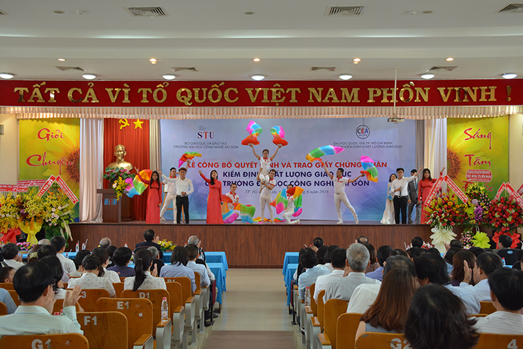
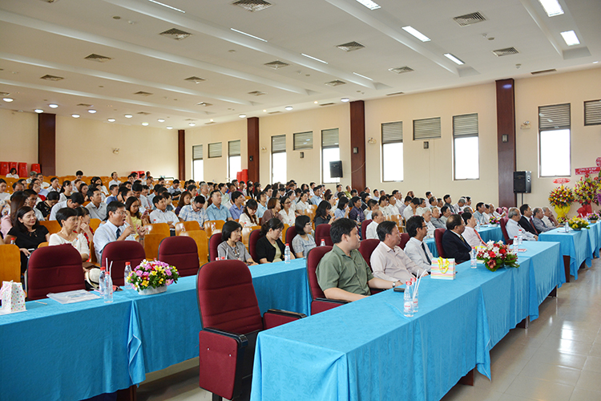
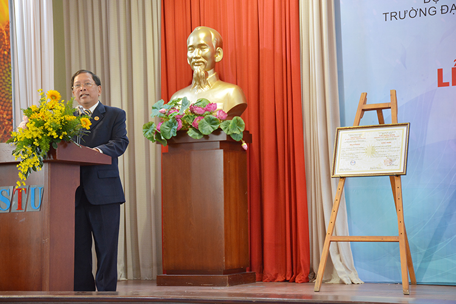

LỄ CÔNG BỐ QUYẾT ĐỊNH VÀ TRAO CHỨNG NHẬN KIỂM ĐỊNH CHẤT LƯỢNG GIÁO DỤC
Ngày 08/6/20018, Trường ĐH Công Nghệ Sài Gòn long trọng tổ chức lễ công bố quyết định và trao giấy chứng nhận kiểm định chất lượng giáo dục.Đến tham dự lễ có sự tham gia của GS. TS. Trần Hồng Quân – Nguyên Bộ Trưởng Bộ Giáo Dục & Đào Tạo - Chủ tịch Hiệp hội Đại học, Cao Đẳng Việt Nam, PGS. TS. Nguyễn Hội Nghĩa – Nguyên Phó Giám đốc ĐHQG TP. HCM – Nguyên Giám đốc Trung tâm kiểm định ĐHQG TP. HCM, cùng đại diện của các sở ban ngành TP. HCM, về phía nhà trường có sự hiện diện của TS. Trương Quang Mùi – Chủ tịch HĐQT – Bí Thư Đảng ủy, PGS. TS. Cao Hào Thi – Hiệu trưởng và các thành viên trong Hội đồng sáng lập, HĐQT, Ban giám hiệu qua các thời kỳ, lãnh đạo các đơn vị, giảng viên, nhân viên và đại diện sinh viên.
Văn nghệ chào mừng chương trình
 PGS. TS. Cao Hào Thi phát biểu cảm ơn các tập thể và cá nhân đã đóng góp vào sự thành công của công tác kiểm định